The 10th and Final YAPC::Asia Tokyo
The 10th and Final YAPC::Asia Tokyo
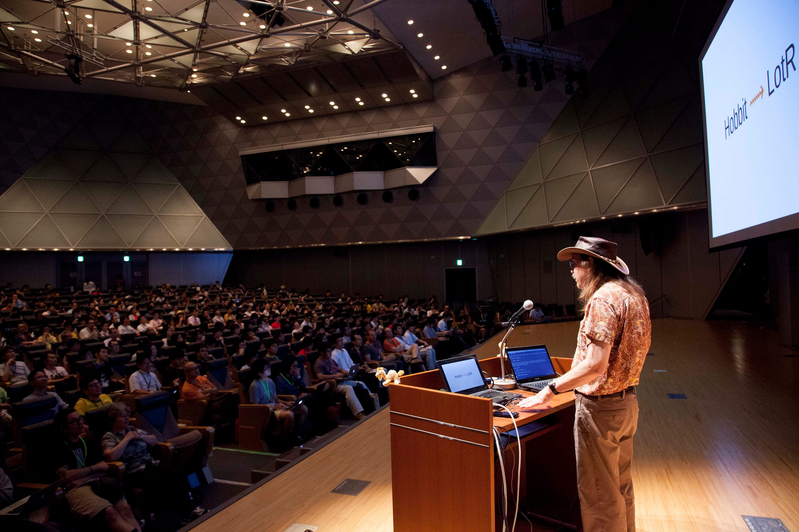
tl;dr: We organized the last YAPC::Asia Tokyo, which attracted thousands of developers. The 10 year ride was great, and we’re proud that we were able to end with such a big Bang. And just one more thing...
The Big Picture
We just held the 10th and final YAPC::Asia Tokyo (of course, if anybody wants to just grab the name and run with, it’s fine… it’s just that we’re not doing it anymore).
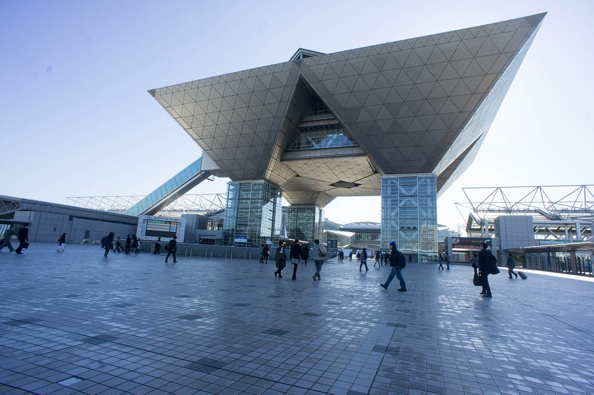
The event took place during Aug 20–22 in Tokyo Bigsight, which is famous for being the venue for Comiket.
The event was, I think, a smashing success. The engineers and the geeks all congregated and talked about tech . The final count of total attendees, including those with paid tickets, invited guests, speakers, and staff were 2,130. Yep, that’s Two-Thousand One Hundred and Thirty. I think for a completely community-based tech conference, this may have been one of the largest ones? I haven’t done research there, but anyway, it was huge.
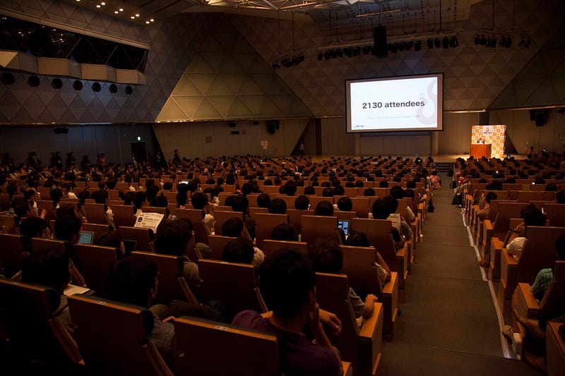
This year we had 5 tracks: rooms with capacities of approximately 1000, 100, 100, 250, and 250, respectively . We did have a slight problem with letting everybody into the talks that they wanted to. We thought of a few ways to fix this, but in the end decided to bite the bullet and let people mingle with each other around the hallways.
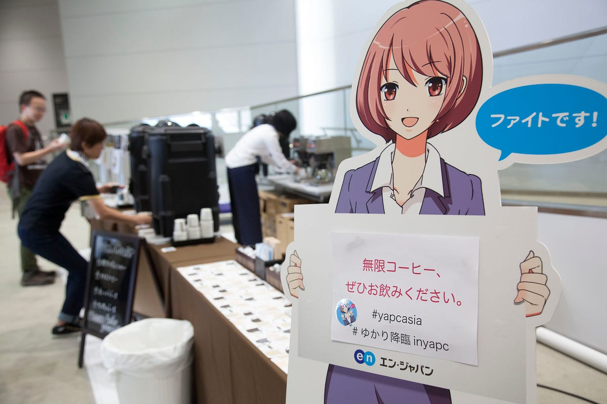
The Talks
So yours truly kicked off the event with an introduction to YAPC::Asia Tokyo.
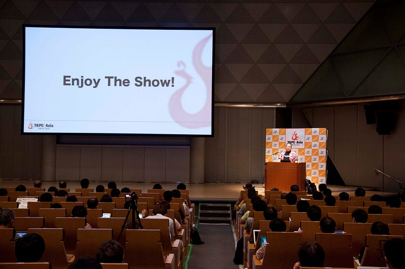
YAPC may stand for Yet Another Perl Conference, but we at YAPC::Asia Tokyo have consciously deviated from that path a long time ago . We pride ourselves in that we choose the most interesting talks from (but not limited to) web related stuff, programming in general, languages, and community management. This is based on the belief that in 2015 most systems are a mash of heterogenous … things, and restraining a conference to one particular technology is a moot point. It is silly to not be able to listen to an interesting talk only because it’s not written in the language of your choice.
In order to pursue this goal, our invited speakers ranged from the language Greats, evangelists of the contemporary developers’ toolkit, advocate for remote working, and even a yoga instructor :)
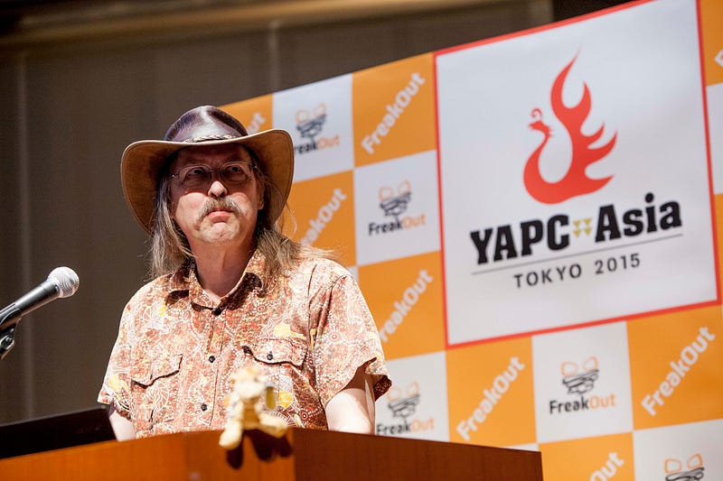
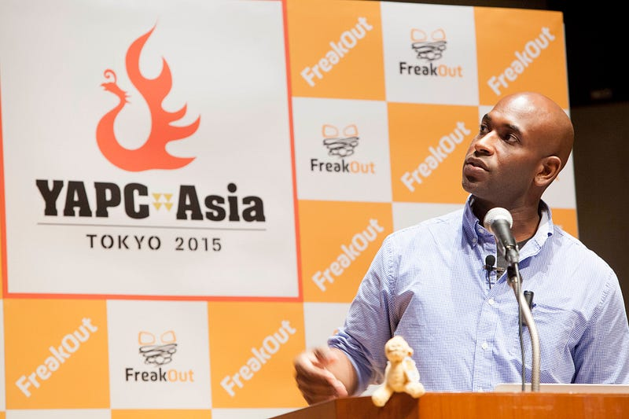
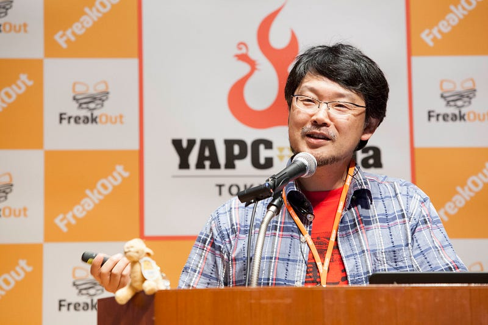
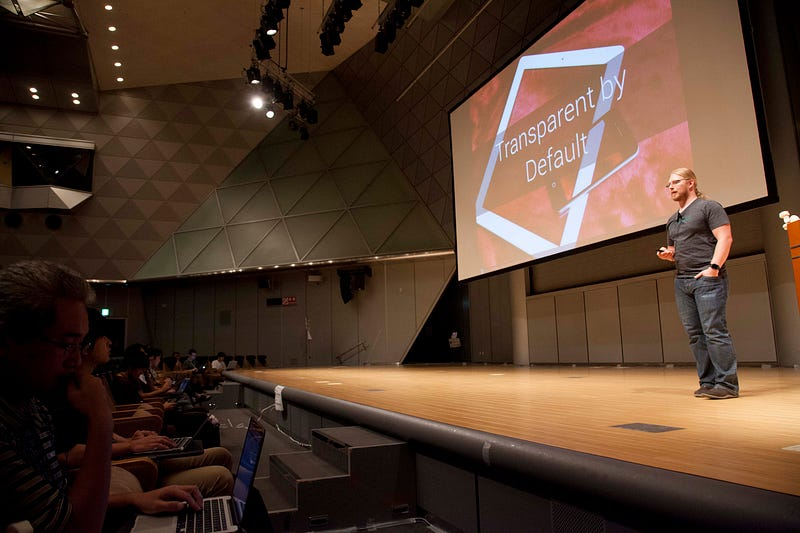
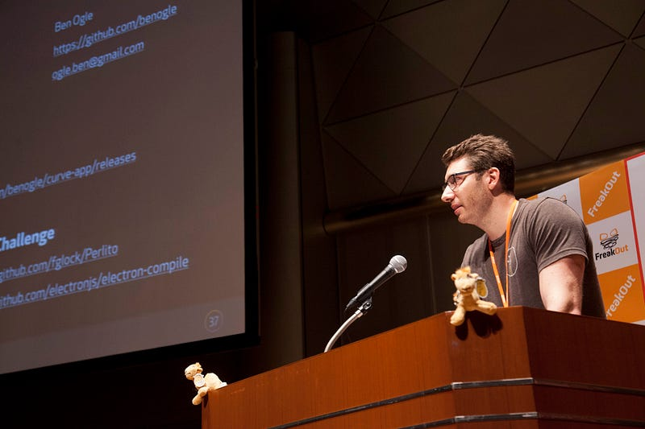
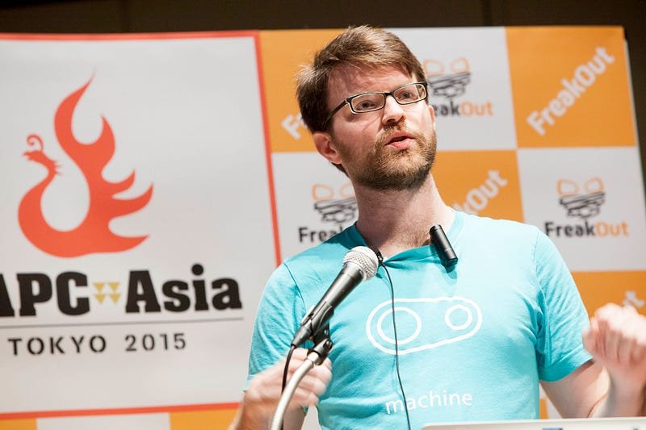
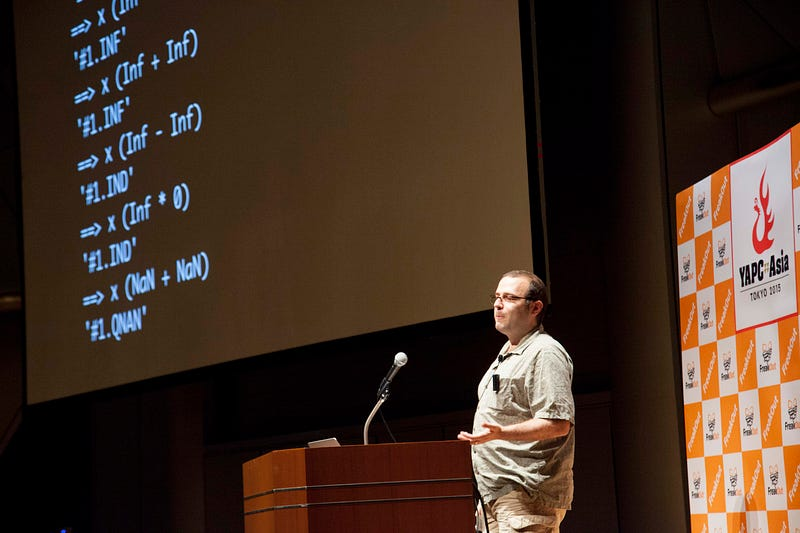
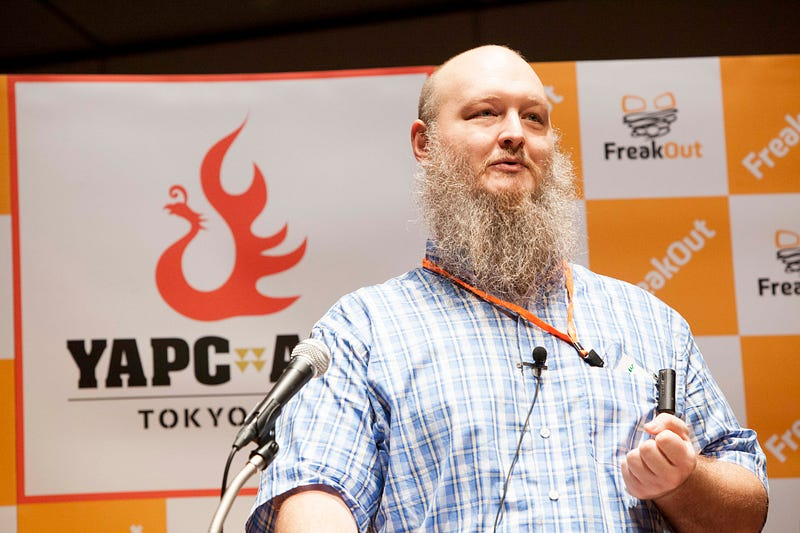
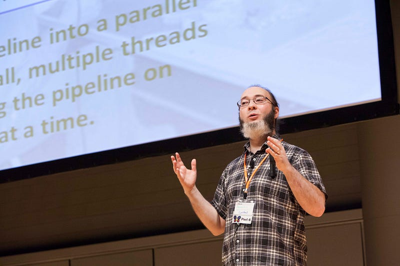
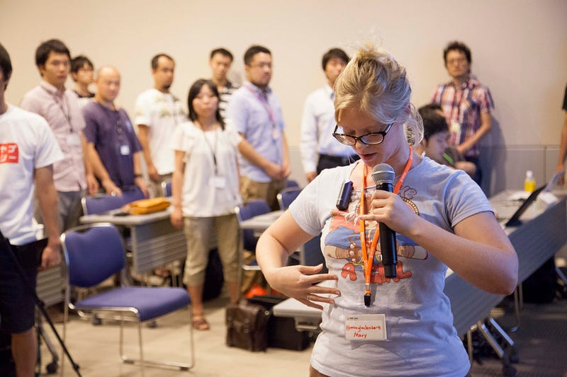
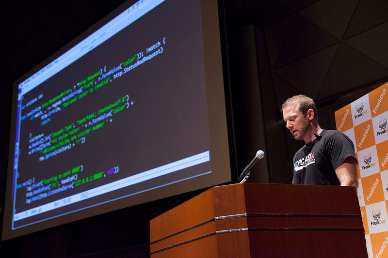
Of course, YAPC::Asia Tokyo is about all the developers, not just the invited guests. We had a little over 40 talks which were selected from the Call For Papers submissions. This year we actually had more than 160 submissions, which made it extremely hard for the organizer team to choose the talks from.
When we added everything including the talks from invited guests, accepted talks, and Lightning Talks, we had about 90 talks. YAPC::Asia Tokyo wouldn’t be YAPC::Asia Tokyo without these speakers. We were very fortunate to have them.
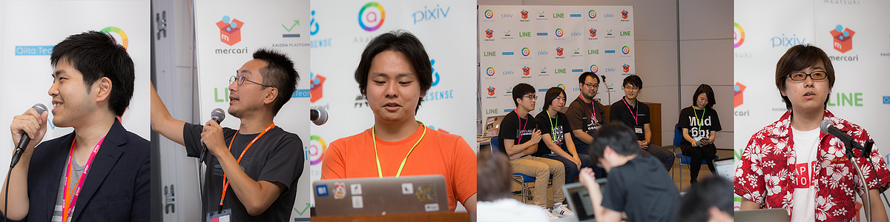
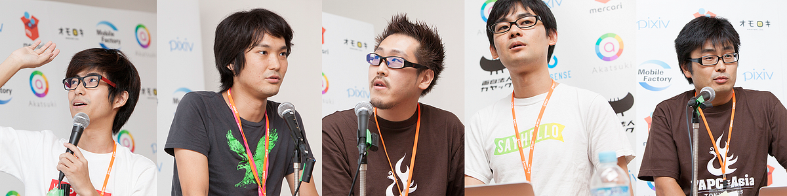
Setup + Day 0
At this point I’m going to go back a little bit to talk about Day 0 of YAPC::Asia Tokyo.
During this day, we do all the setup, and then have an extra “night” of talks.
The “setup” involves mostly of prepping the check-in area including stuffing the swag bag with all the goodies, and the network staff doing the wiring and bootstrap work.
This year we received approximately 40,000 items to pack into 1,600 bags, and a little over then 1,000 shirts to fold. And we only had between 11:00am to 17:00pm to do all of this.
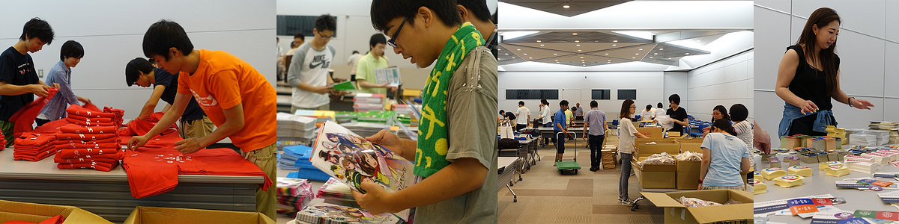
This is where our history shines: We have been fighting and learning over the years on how to efficiently unpack thousands of swags and shoving them into the swag bags. One of the things we took time in doing was actually designing the swag-processing line way before the event, including the layout of the tables and the amount of concurrency (hey, we’re engineers) to employ when dispatching workers (literally). Because of all this preperation and the fact that we had a really big room to work with resulted in 50% reduction in the time required to do the packing: only 3 hours instead of 5~6hours from the previous year!
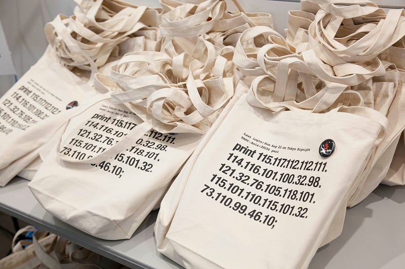
After the bags are packed and the check-in counter is ready, it’s time for the talks for Day 0.
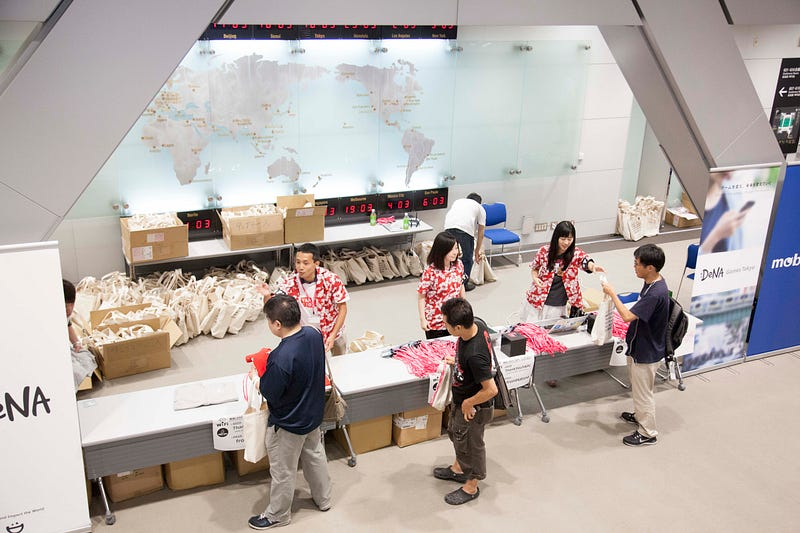
In the past we had held events like LT-thon (a Lightning Talk Marathon) and such, but this year we had so many talks rejected, we decided to salvage some of them by doing a RejectConf. Talks on Day 0 are laid back, and the audience is provided with beverages and light snack.
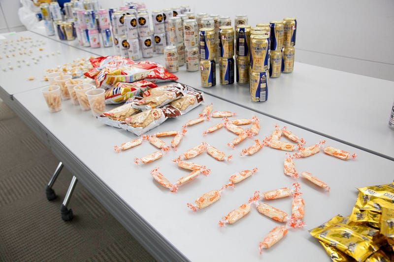
As an aside, this extra night is used for us organizers to practice how we handle both check-in and the process of running the talks. This
This year we started off with a talk on the latest news on PHP and the Ruby language development process. We had a total of six talks on two tracks this night. To our surprise, where we estimated to welcome 300 or so attendees we had over 500 people come to the Day 0 talks. We obviously did not have enough beverages for everybody. Oops.
The Lightning Talks
Lightning Talks in YAPC::Asia Tokyo has become sort of a the star attraction of the event. The Japanese take their Lightning Talks very… seriously: and by serious, I mean they are both seriously technical and hilarious.
This year, among the many Lightning Talks, we were reminded about all of the pitfalls that you may encounter in MySQL 5.7, we listened to morse code, and we saw an attempt to acquire exclusive lock over a server using a telephone line (but he couldn’t demo it because he overused his free phone-API account’s quota :D).
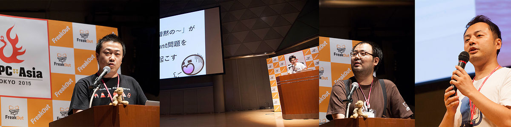
My personal favorite was the impromptu live showing of CONBU’s network setup. The CONBU team came up on stage, blew a whistle, and everybody started working to set up the WiFi access point — which includes wiring the devices, securing the wires, and checking for connectivity.
In matter of a minute or so, they had a working WiFi access point. Then after another whistle they tore apart the entire setup and compactly stashed it away in just about the same time.
The Dinner
YAPC::Asia Tokyo tries to be as much a social event than just a tech conference, so we have the big dinner. As much as we’d like to, it’s just not possible to feed 2000 people all at once at a venue like this. We rented, thanks to our Dinner sponsors DeNA and Career Hack, the biggest room that they had for this sort of thing, and it held approximately 700 people.
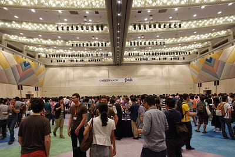
Ordering catering at this level (and not waste food or money) is an art form in itself. But I believe our staff did a great job ordering out the right amount of things to the right people
Hopefully people enjoyed it. The photos seem to indicate they did!
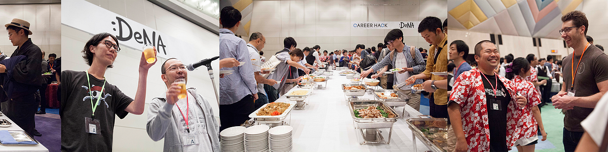
Best Talk Awards
Every year we host the Best Talk Awards to encourage the speakers. This year we chose these prizes, but for whatever reason most speakers who were interested seemed to have fixed their eyes on the third place prize, which was… 10kg of ham. Yes, ham.
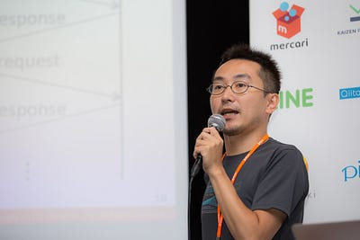
This year the third and second places were talks on HTTP2, signaling the interest by the Japanese audience on this upcoming technology. The third place went to Kazuho Oku, author of h2o (he was apparently eyeing for the ham, and he did get it). The second splace went to @Jxck_ who hosts mosaic.fm (he was eyeing the ham as well, but he got an Apple Watch)
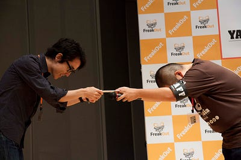
The first place went to @hitode909 who talked about the history of designing/refactoring of his $day_job product over the years, including stealing ideas from other languages, paradigms, and frameworks to better cope with the new needs. He got a Gift Pack from Microsoft, including all the bells and whistles around Surface 3. Congratulations!
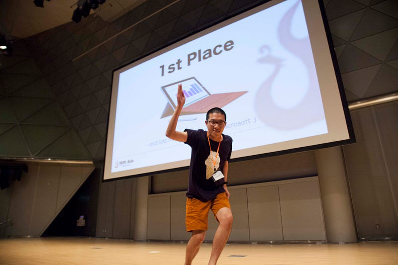
WiFi/CONBU
No venue that I have come across up to this point is built expecting 2,000 engineers bearing various tablets, smartphones, and PCs all connecting to their wireless network all at once. This is precisely why we had a sponsorship for our WiFi network (which was hosted by Hatena Inc.) and, asked CONBU(CONference Network BUilders) once again to setup the network for us.
In the end the network they built withstood connections from 3500+ unique devices over 2.5 days and a traffic of 100+Mbps on average with peaks at around 200Mbps.
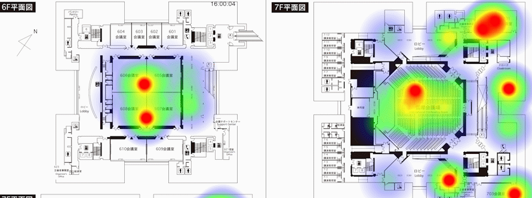
As something new to try, I asked the folks at CONBU to create a visualization map of who is using the WiFi at a particular area in realtime. This would also be an indicator of which talks people are attending, therefore allowing you to better schedule your move (which in the end kind of failed, because all of the rooms were mostly packed). This I believe is one of the ways we can create something new from partnering with engineers from other areas of expertise. I’m kind of excited as to what we can do next.
“YAPC ain’t over till you blog about it”
Over the years we have repeatedly kept telling our attendees to blog about their experience during YAPC::Asia Tokyo. We feel that this is a much better form of feedback than any other alternative, as this medium sticks around for a relatively long time, and you tend to get more information out of them including text and multimedia.
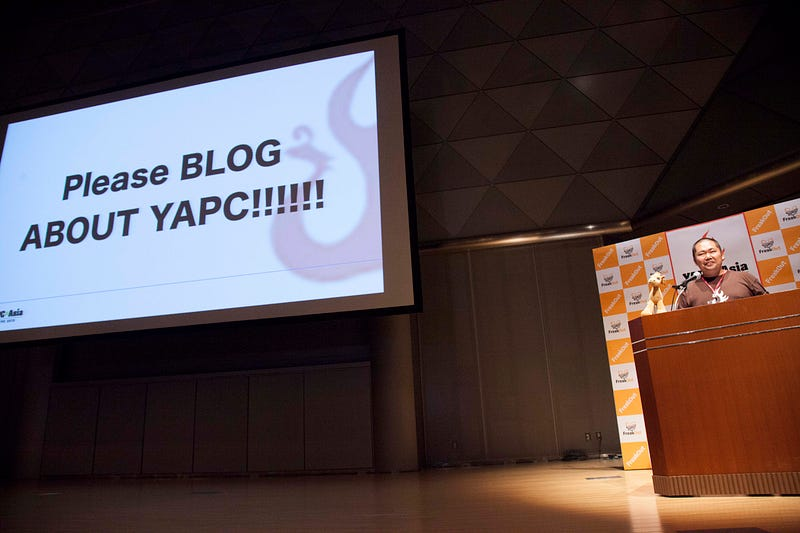
As of this writing we have collected 357 blog entries. Unfortunately for you the English-speaking reader, these are almost exclusively in Japanese.
If you are an organizer, I’d really like your to consider the effects of having over 300 people blog about your event. It’s powerful marketing, but it’s also very very rewarding. I highly recommend it.
Reliving YAPC::Asia Tokyo 2015
After you read all of this, you may be thinking: “Ugh, I should have gone!” or “Boy, it was a fun conference, I sure would like to see some photos or talk videos”. Well, fear not.
You can always checkout our YAPC::Asia Tokyo 2015 Official Photos, or you can peruse our YouTube channel. If you also want to look at the slides, most speakers have already registered their slide (for example, see this page for the talk from Kazunori Sato on Google’s GCP internals) (Note: due to glitches, the video on that link has been taken down temporarily)
The End
And that was it. That concludes the 10th and final YAPC::Asia Tokyo.
While the name “YAPC::Asia Tokyo” doesn’t belong to anybody, I am not doing it again. This was my last YAPC::Asia Tokyo.
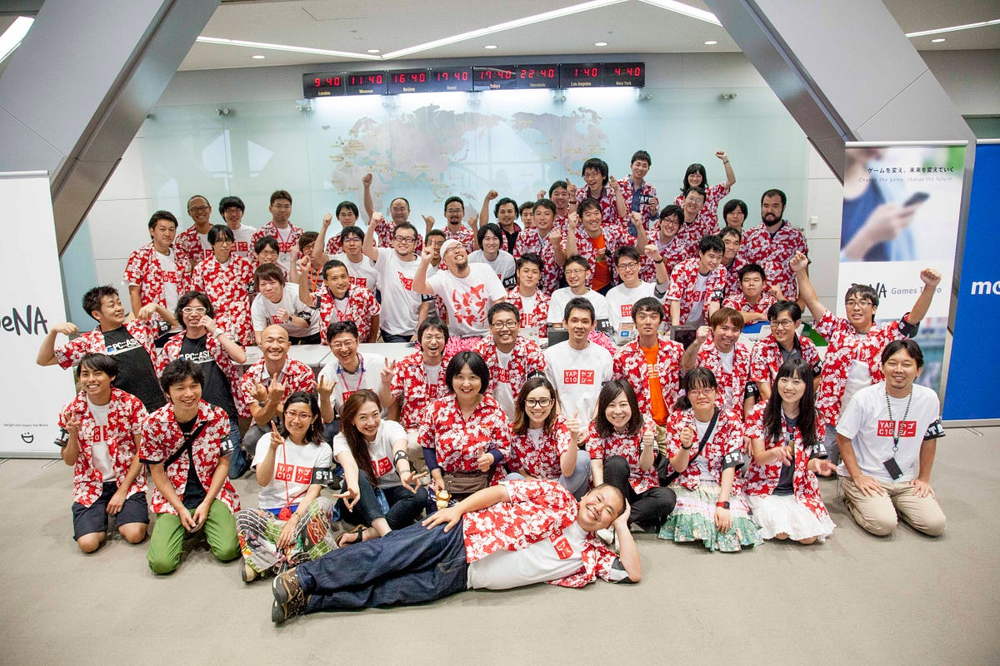
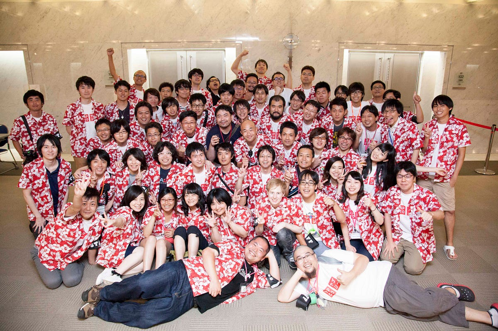
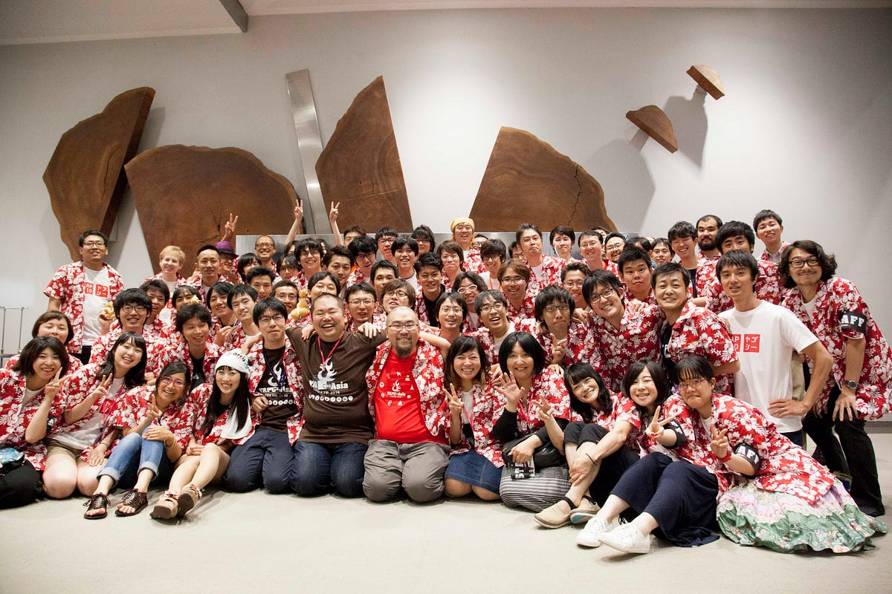
I’m very grateful for the people who supported me, the sponsors who helped us, the staff that kept up with my constant nagging to finish the tasks, all the speakers and attendees that made YAPC::Asia Tokyo what it is today. The only thing I can say to them is: Thank you, so very much.
I was involved in every one of the past 10 YAPC::Asia Tokyo, and I was the (co|main)-organizer for 6 of them. Although I know the decision to call it quits was definitely the right one, I also do feel a little bit sad that I won’t do this again. But then again, it’s such a nice feeling to not have to wake up with a cold sweat the next day thinking “Oh my god, am I really going to get a venue for my next conference that can hold 2000 people?”
Thank you to all who helped me make YAPC::Asia Tokyo 2015 happen. And finally, I would also like to thank my employer, HDE Inc.
Just… One More Thing
No promises yet, but next up: “Beacon”